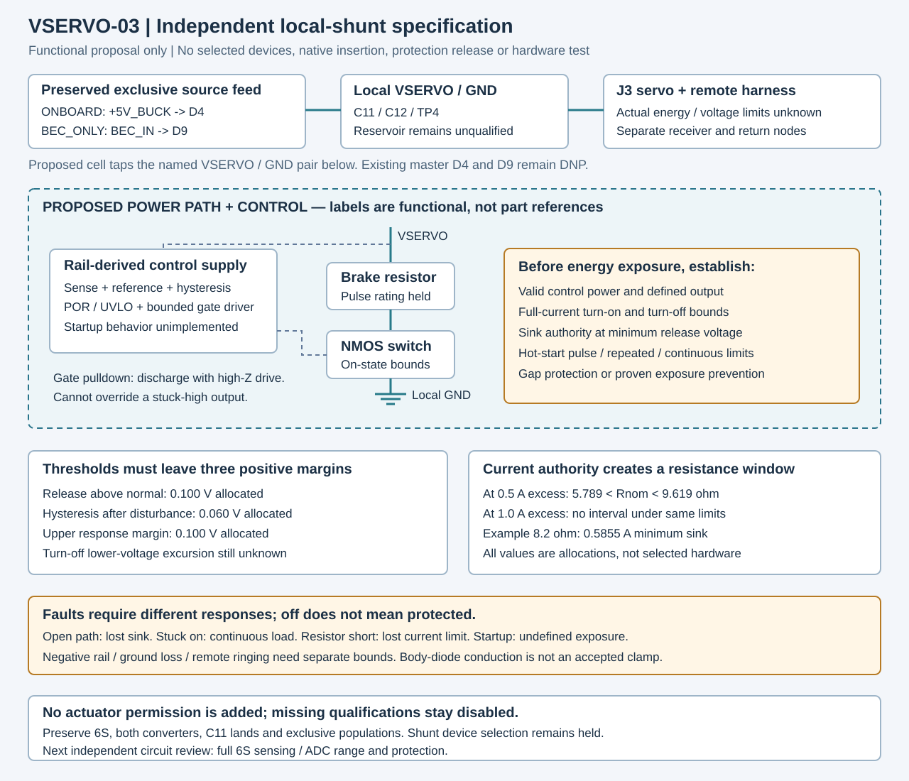

Actual design inputs remain unavailable
Illustrative values never populate the actual evidence records. No circuit, protection, assembly or powered application is released.
1 · Can the thresholds coexist?
Normal maximum includes worst sensed source ripple/error. The noise allowance protects the rising/falling gap. Further rise must cover full sink response; turn-off undervoltage is a separate open boundary.
2 · Is any nominal resistance possible?
Current authority is checked at the lowest release threshold. Include all still-conducting source and return paths. A positive interval is necessary arithmetic only.
3 · Fixed 8.2 ohm illustration — not a selected part
The resistor result is an instantaneous conservative bound. The FET result includes fully-on conduction only; it omits transitions, partial gate drive and hot SOA. Pulse, repeated and continuous fault ratings remain unknown.
Proposed independent shunt cell
Open full-size functional drawing
Off is not a guarantee of protection
A gate pulldown supports discharge with high-impedance drive; it cannot override a stuck-high driver. No protection is credited during undefined startup or UVLO. PWM disarm does not erase stored or externally returned energy.
- Open path: no controlled sink.
- Shorted switch or stuck-high drive: continuous resistor loading.
- Shorted resistor: lost current limit.
- Negative rail: body-diode conduction is not an accepted reverse clamp.
Existing actuator qualifications remain disabled. Separate receiver readiness and deliberate rearm still apply.